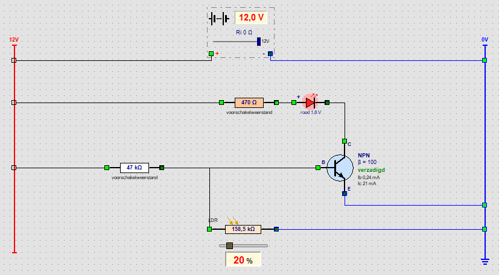

LDR. In de collector 470 Ω en een rode
led. Bij 80 % licht blijft de led uit.
LDR. In de collector 470 Ω en een rode
led. Bij 80 % licht blijft de led uit.Leerpad › Elektronica › Les 40 van 44 · Niveau: Uitgebreid
LDR. In de collector 470 Ω en een rode
led. Bij 80 % licht blijft de led uit.Een LDR is een weerstand die kleiner wordt naarmate er meer licht op valt. Met de schuifknop onder de LDR regel je het licht; het schermpje eronder toont het licht, het blokje de weerstand.
De weerstand van 47 kΩ en de LDR vormen samen een spanningsdeler. De spanning op de basis is het stuk van de 12 V dat over de LDR staat:
Ubasis = 12 V × RLDR / (47 kΩ + RLDR)

Waar ligt het omslagpunt? De transistor begint te geleiden als de basis 0,7 V krijgt. Dan staat er 11,3 V over de 47 kΩ, en dus moet de LDR 0,7 / 11,3 × 47 kΩ ≈ 2,9 kΩ hebben. Dat is bij ongeveer 63 % licht.
Kies met rechtsklik op de weerstand van 47 kΩ Soort › voorschakelweerstand (100 kΩ). Moet het nu donkerder of minder donker zijn voor de led aangaat?
Donkerder. Met 100 kΩ moet de LDR 0,7 / 11,3 × 100 kΩ ≈ 6,2 kΩ hebben voor de basis 0,7 V krijgt. Dat gebeurt pas onder ongeveer 55 % licht. Met de vaste weerstand stel je dus in bij hoeveel licht het lampje aangaat.